ВЫСТАВОЧНЫЙ СТЕНД / ПОЛНЫЙ ЦИКЛ
Пространство,
построенное
вокруг света.
От идеи и дизайна до проектирования и застройки выставочного пространства для компании «Светогор».
Не просто построить стенд.
Взять ответственность
за весь результат.
Для одного из ключевых клиентов — компании «Светогор» — SPACE взял на себя полный цикл работы с выставочным пространством: от идеи и визуальной концепции до проектирования, производства и застройки.
Бренд работает со светом и технологиями, поэтому пространство не могло быть очередной выставочной конструкцией с логотипом. Оно должно было само стать частью коммуникации компании.
Сделать технологию
видимой.
На выставке «Защищённый грунт России» компания представляла собственную разработку — красный светодиод с фотонной эффективностью более 5,00 μmol/J.
Решение создано для систем ассимиляционного освещения и даёт до 20% более высокую световую эффективность по сравнению с традиционными решениями.
Поэтому и сам стенд мы строили вокруг ключевой темы бренда — света.
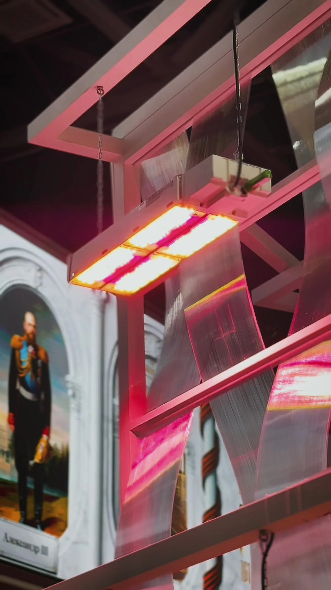
Свет — не эффект.
Свет — главный материал.
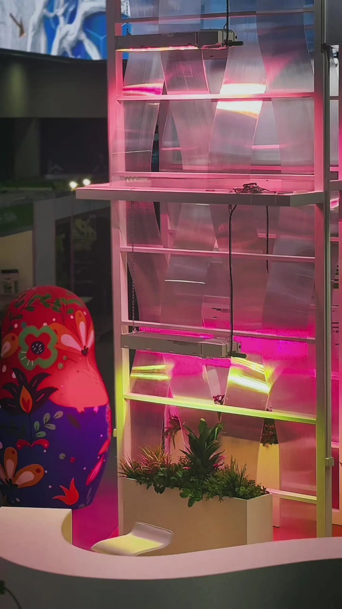
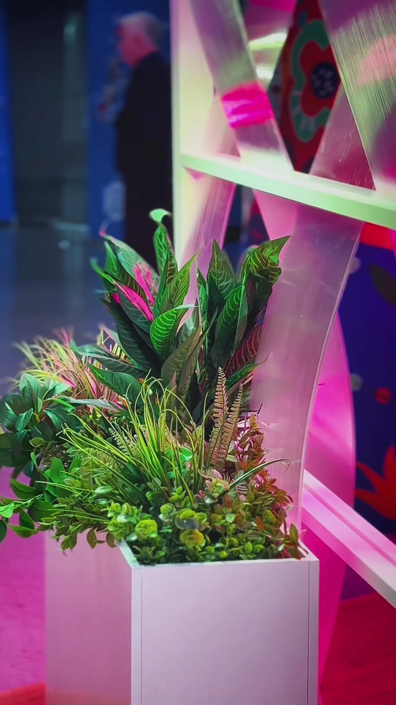
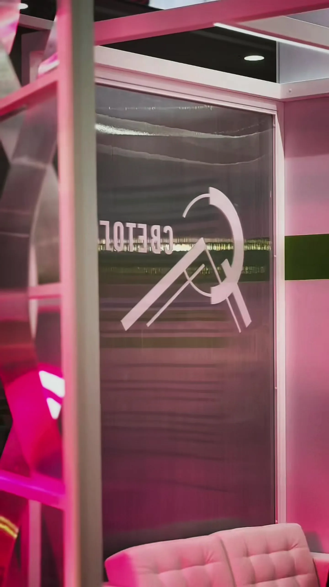
Фирменный зелёный, прозрачные фактуры, вертикальная архитектура, живые растения и красно-розовое свечение оборудования стали частью одного визуального языка.
Стенд должен работать
с любого расстояния.
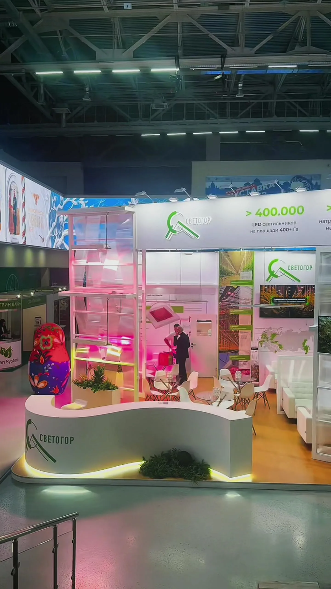
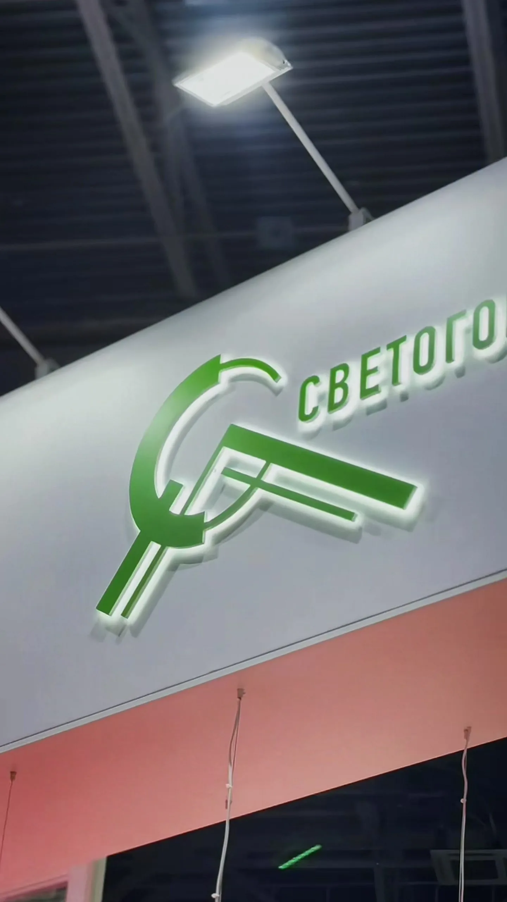
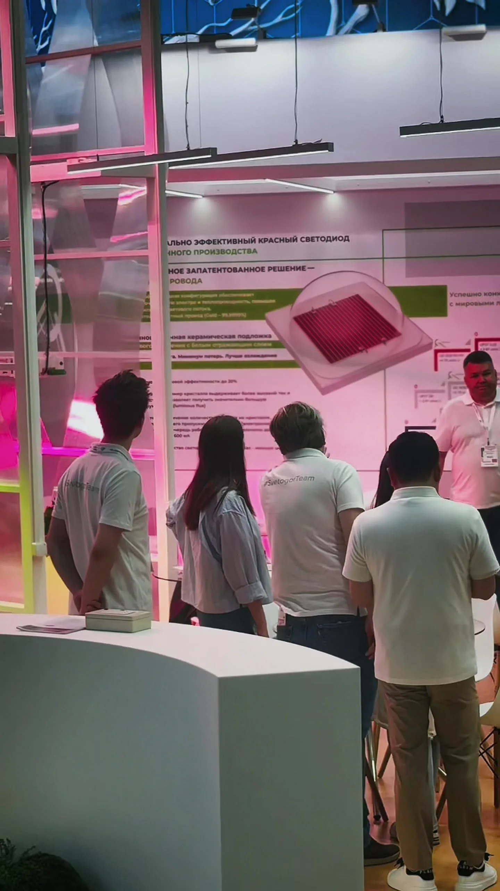
Пространство,
которое помогает говорить.
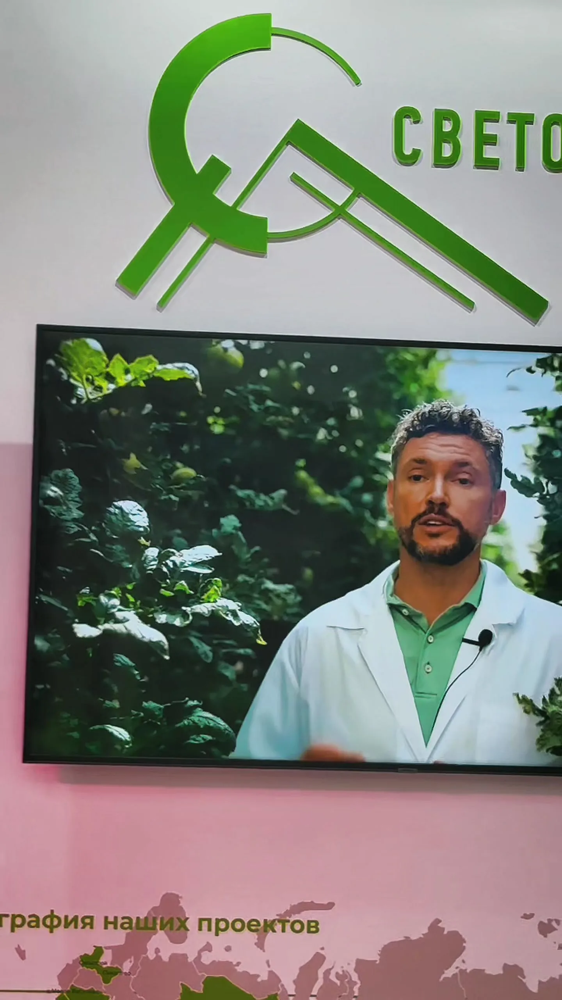
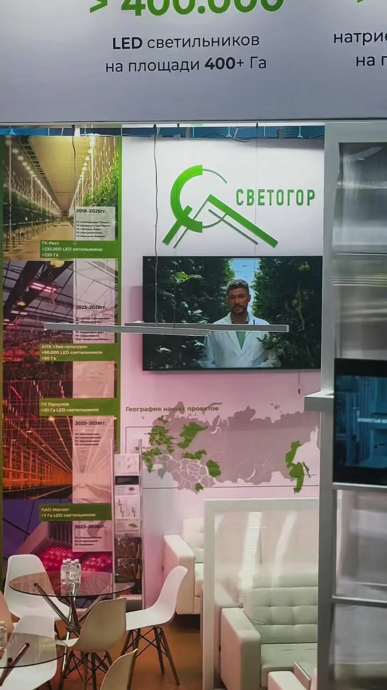
Стенд должен был не только хорошо выглядеть, но и помогать показывать продукт, объяснять технологию и создавать естественные точки для разговора.
Экраны, продуктовые материалы, переговорная зона и визуальные акценты работали как одна система — от первого взгляда до содержательной встречи.
Главная проверка дизайна —
как он работает в реальности.
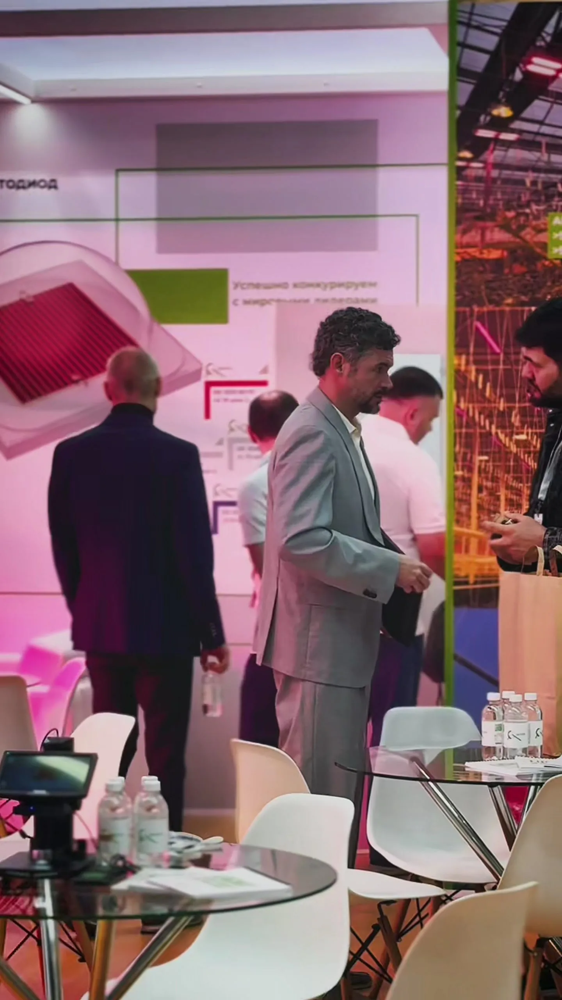
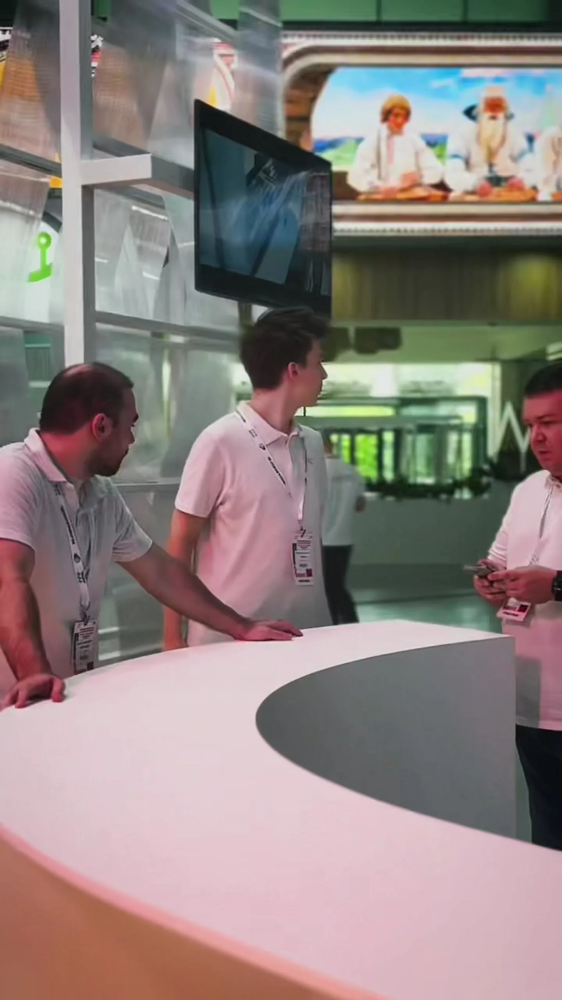
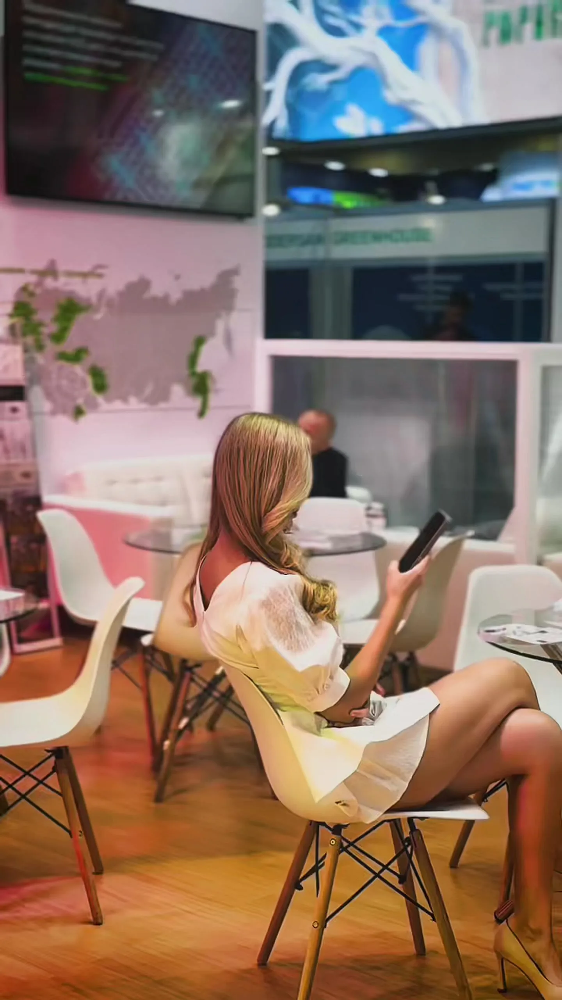
В реальности пространство постоянно собирало людей, становилось местом для встреч и переговоров, помогало демонстрировать продукт и объяснять технологию.
То, что запоминается
после выставки.
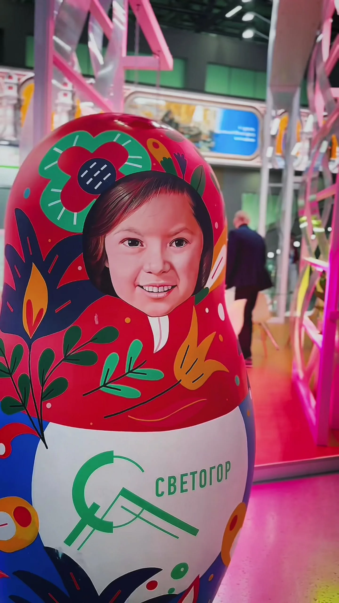
Один проект.
Одна команда.
Полный цикл.
Концепция
Идея пространства и визуальная логика вокруг темы света.
Дизайн
Архитектура, материалы, цвет, световые акценты и брендинг.
Проектирование
Перевод визуальной идеи в рабочую техническую систему.
Застройка
Производство, монтаж и доведение пространства до готового результата.
09 / РЕЗУЛЬТАТ
Стенд, о котором
говорили сами гости.
Клиент остался доволен результатом. А на выставке команда снова и снова слышала от участников одну и ту же реакцию: «Какой у вас крутой стенд».
Для нас это лучший показатель: пространство не просто соответствует рендерам — оно работает, собирает людей и помогает бренду говорить о своём продукте.
NEXT CASE